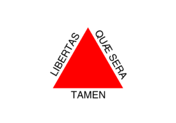

Tabela sobre população de cada estado e suas capitais, suas bandeiras, cidades aleatórias de cada estado e links dos sites do governo de cada estado.
Tabela 2
| Região |
Estado |
Capital |
População |
Bandeira-estado |
Cidade |
Links-estado |
| Nordeste |
Bahia |
Salvador |
15 milhões |
|
Amargosa |
Gover do Estado |
| Norte |
Acre |
Rio Branco |
906 mil |

|
Cruzeiro do Sul |
Gover do Estado |
| Nordeste |
Alagoas |
Maceió |
3,4 milhões |

|
Arapiraca |
Gover do Estado |
| Norte |
Amazonas |
Manaus |
4,3 milhões |

|
Parintins |
Gover do Estado |
| Nordeste |
Ceará |
Fortaleza |
9,4 milhões |
|
Juazeiro do Norte |
Gover do Estado |
| Sudeste |
Espírito Santo |
Vitória |
4,1 milhões |

|
Vila Velha |
Gover do Estado |
| Centro-Oeste |
Goiás |
Goiânia |
7,2 milhões |

|
Anápolis |
Governo do Estado |
| Nordeste |
Maranhão |
São Luís |
7,2 milhões |
|
Imperatriz |
Governo do Estado |
| Centro-Oeste |
Mato-Grosso |
Cuiabá |
3,5 milhões |

|
Rondonópolis |
Governo do Estado |
| Centro-Oeste |
Mato Grosso do Sul |
Campo Grande |
2,8 milhões |
|
Dourados |
Governo do Estado |
| Sudeste |
Minas Gerais |
Belo Horizonte |
21 milhões |

|
Uberlãndia |
Governo do Estado |
| Norte |
Pará |
Belém |
9 milhões |

|
Santarém |
Governo do Estado |
| Nordeste |
Paraiba |
João Pessoa |
4,1 milhões |

|
Campina Grande |
Governo do Estado |
| Sul |
Paraná |
Curitiba |
11 milhões |

|
Londrina |
Governo do Estado |
| Nordeste |
Pernambuco |
Recife |
9,8 milhões |

|
Caruaru |
Governo do Estado |
| Nordeste |
Piauí |
Teresina |
3,3 milhões |

|
Parnaíba |
Governo do Estado |
| Sudeste |
Rio de Janeiro |
Rio de Janeiro |
17 milhões |
|
Niterói |
Governo do Estado |
| Nordeste |
Rio Grande do Norte |
Natal |
3,6 milhões |

|
Mossoró |
Governo do Estado |
| Sul |
Rio Grande do Sul |
Porto Alegre |
11 milhões |

|
Caixias do Sul |
Governo do Estado |
| Norte |
Rondônia |
Porto Velho |
1,8 milhões |

|
Ji-Paraná |
Governo do Estado |
| Norte |
Roraima |
Boa Vista |
652 mil |

|
Rorainópolis |
Governo do Estado |
| Sul |
Santa Catarina |
Florianópolis |
7,4 milhões |

|
Gaspar |
Governo do Estado |
| Sudeste |
São Paulo |
São Paulo |
4,6 milhões |

|
Campinas |
Governo do Estado |
| Nordeste |
Sergipe |
Aracaju |
2,3 milhões |

|
Itabaiana |
Governo do Estado |
| Norte |
Tocantins |
Palmas |
1,6 milhões |
|
Gurupi |
Governo do Estado |
| Norte |
Amapá |
Macapá |
907 mil |

|
Santana |
Governo do Estado |